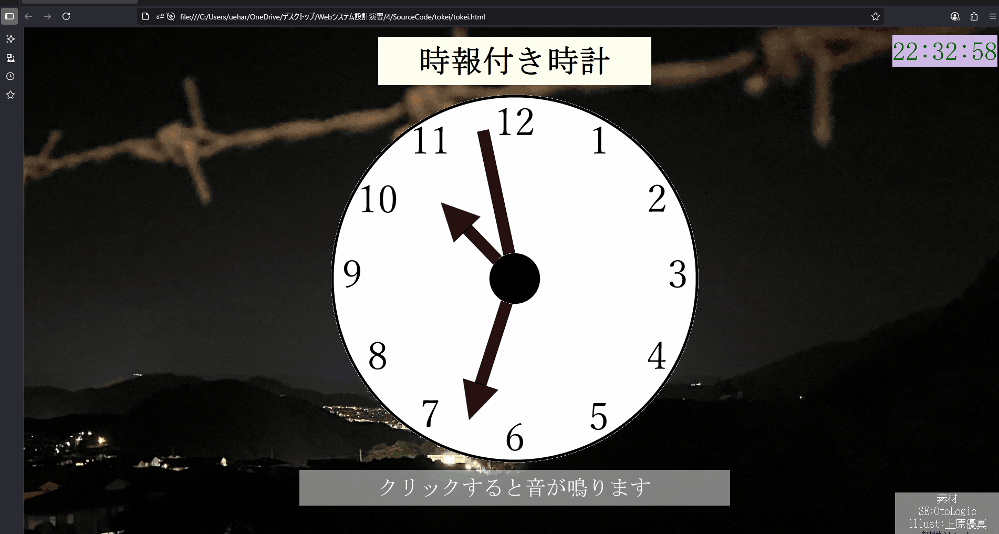
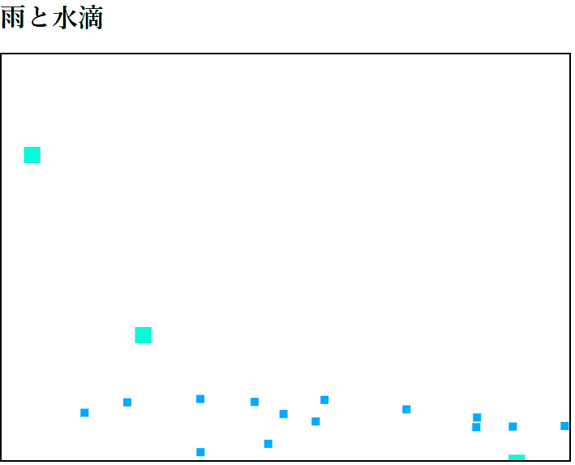

作品集

Web時計
ヒューマンインターフェースの講義で作成したWEB上で動作する時計です。時計のイラストはAdobeのillustratorを使い、作成しました。背景は自ら撮影を行い、使用しています。Jsファイルから時間を取得し、中央の時計のイラストを動かしています。

風船わるばい！【引っ張って矢を飛ばせ！】
学園祭に来場するお客様向けに作成したゲームです。
Unity上でサークルメンバーと作成しました。
パソコンとスマートフォンの両方でプレイすることができます。
私はC#を用いて風船の表示とその数を増やすプログラムを作成しました。

数理造形演習の作品群
数理造形演習で作成した作品集です
再生されている雨が降っているアニメーションはHTML5のcanvas要素とJavaScriptを用いて作成しました。
他にも熊の絵やカラフルな花火のアニメーション、射的のアニメーションなどを作成しました。